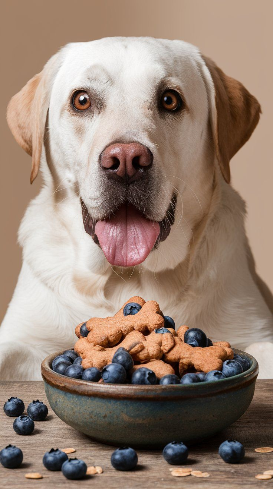
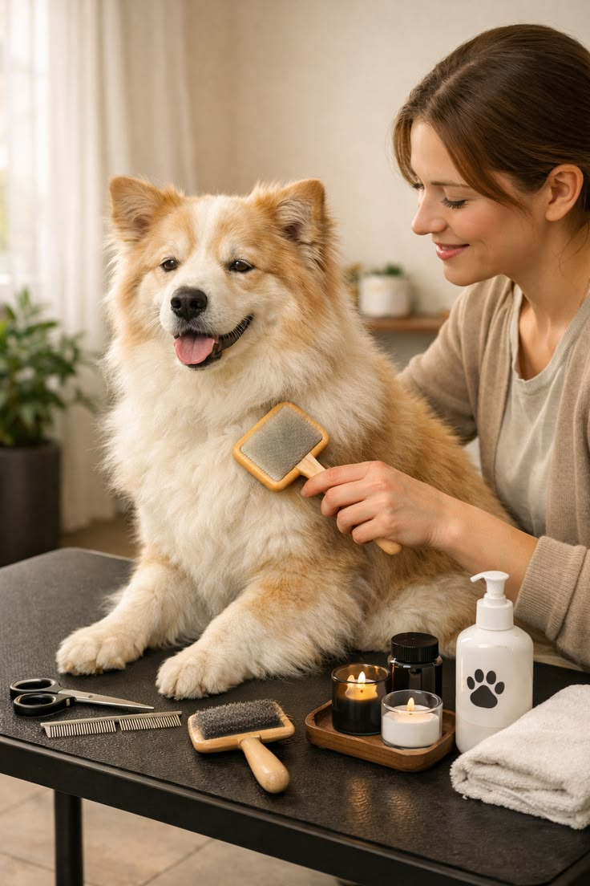

Nutrition
Guides
Everything you need to know about feeding your dog a healthier, happier diet.
Latest
Articles
 Nutrition
Nutrition
The Power of Single Ingredients
Discover why minimalist recipes with one protein source can transform your dog's digestion and coat health.
 Health
Health
Why Grain-Free Matters
An in-depth look at how grain-free nutrition supports energy levels, digestion, and allergy relief in dogs.
 Feeding Tips
Feeding Tips
Reading Labels 101
Learn how to decode pet food labels so you can spot fillers, by-products, and misleading claims at a glance.
 Nutrition
Nutrition
Superfoods for Dogs
Blueberries, kale, turmeric — explore the superfoods that give your dog's immune system a natural boost.
 Puppy Care
Puppy Care
Puppy Nutrition Essentials
Everything you need to feed your growing pup — from weaning to portion sizes and the best first foods.
 Health
Health
The Hydration Handbook
Why water is the most overlooked nutrient — tips to keep your dog hydrated and healthy year-round.
Ingredient
Spotlight

Chicken
Lean protein for strong muscles and healthy growth.

Salmon
Omega-3 fatty acids for a shiny coat and healthy joints.

Blueberries
Antioxidant-rich superfood for immune system support.

Sweet Potato
Fiber and vitamin-rich root for gentle digestion.

Pumpkin
Soluble fiber that soothes upset stomachs and regulates digestion.
Kale
Packed with vitamins A, C, and K for overall vitality and immunity.
Nutritional Benefits
At a Glance
| # | Ingredient | Benefit | Best For |
|---|---|---|---|
| 01 | Chicken | Lean protein for muscle development | Active & growing dogs |
| 02 | Salmon | Omega-3 for coat & joint health | Sensitive skin & seniors |
| 03 | Sweet Potato | Fiber & vitamins for digestion | Sensitive stomachs |
| 04 | Blueberries | Antioxidants for immunity | All breeds |
| 05 | Turmeric | Anti-inflammatory properties | Senior & arthritic dogs |
| 06 | Pumpkin | Soluble fiber for digestion | Upset stomachs |
Feeding by
Life Stage
Puppy
- High-protein formula
- DHA for brain development
- Small, frequent meals

Adult
- Balanced protein & fat
- Joint support blend
- Weight management

Senior
- Lower calorie density
- Omega-3 for joints
- Easy-to-chew texture

Active
- High-calorie fuel
- Extra protein for muscle
- Electrolyte support
Ask Our
Nutritionist
How much should I feed my dog each day?
Can I mix wet and dry food?
What ingredients should I avoid?
Is grain-free food better for all dogs?
How do I transition my dog to new food?
Get Your Free
Nutrition Guide
Download our comprehensive guide to canine nutrition — packed with expert tips, feeding charts, and recipe ideas.